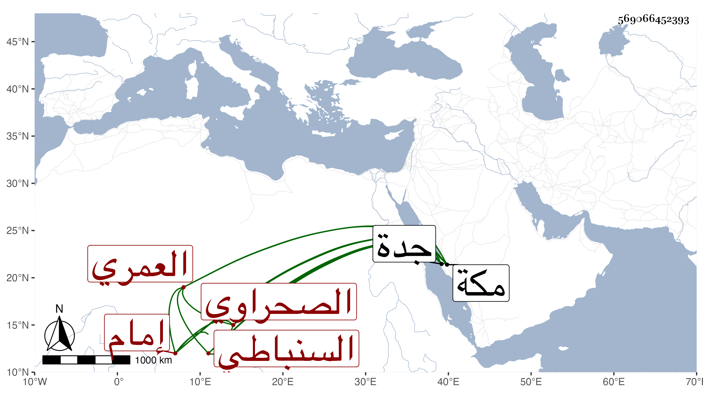

0902Sakhawi.DawLamic.ITO20230111-ara1.EIS1600.569066452393
Biography ID: 569066452393
203
محمد بن عبد الله بن عبيد الله بن حسن السنباطي الأصل الصحراوي إمام تربة يلبغا العمري . ولد بها سنة اربع وأربعين وحفظ القرآن وجوده على البرهان الشامي الأزهري بل على إمامه النور البلبيسي والعمدة وجل التنبيه وحضر دروس العبادي وابن أخيه وموسى البرمكيني وكتب على يس الجلالي وشمس الدين بن سعد الدين فأجاد وأم بالتربة المذكورة في حياة أبيه وبعده واختص بالمحب بن المسدي الإمام ، وقدم مكة في أوائل سنة سبع وتسعين بحرا فجاور حتى ... وأقرأ ابن محتسبها قليلا ثم انفصل عنه وتردد إلي وسمع بل سمعت أنه سمع على علي حفيد يوسف العجمي وغيره بملاحظة ابن الشيخ يوسف الصفي وكان يصحبه وسافر جدة .
